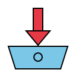

KEPCO SRM의 적격심사·PQ심사 첨부파일을 한 번에 다운로드합니다.
평소 사용하시는 본인 Chrome에서 그대로 동작합니다.
외부망(개인망)에서 .zip / 사내망 반입은 .html 자가설치 파일을 받으세요. 자세한 방법은 아래 안내 참조.
아래 6단계를 순서대로 따라하세요. 5분이면 끝납니다.
위 ⬇ 다운로드 (.zip) 버튼으로 받은 zip 파일을 원하는 위치에 압축 해제하세요.
예: D:\chrome_download_extension 또는 C:\Users\본인\Documents\chrome_download_extension
Chrome을 켜고 주소창에 다음을 그대로 입력한 뒤 Enter:
이 페이지가 Chrome에 설치된 모든 확장 프로그램을 관리하는 곳입니다.
확장 프로그램 페이지의 우측 상단에 있는 "개발자 모드" 토글을 켭니다.
토글이 파란색이면 ON, 회색이면 OFF입니다. 파란색이 되어야 합니다.
개발자 모드를 켜면 좌측 상단에 새 버튼들이 나타납니다. 그 중 첫 번째 버튼을 클릭:
파일 탐색기 창이 뜨면 1단계에서 압축 해제한 폴더를 찾아 선택하고 "폴더 선택" 클릭.
manifest.json이 보이면 정확한 폴더입니다.
설치 성공 시 확장 프로그램 목록에 다음 카드가 표시됩니다:
KEPCO SRM 페이지에서 보이는 모든 첨부파일을 한 번에 다운로드합니다.
Chrome 우측 상단의 퍼즐 아이콘 🧩을 클릭하면 설치된 확장이 모두 표시됩니다. "SRM 첨부파일 일괄 다운로더" 옆의 핀 📌 아이콘을 클릭하면 툴바에 항상 보이게 됩니다.
한 번 설치 후 매일 이렇게 사용합니다.
본인 Chrome으로 SRM 로그인 → 입찰/계약 → 심사 및 평가 → 적격심사의뢰평가 → 원하는 공고 클릭
입찰기본정보 탭에서 첨부파일 목록이 보이는 화면까지 진입합니다.
Chrome 툴바 우측 상단의 📥 아이콘을 클릭하면 작은 창(popup)이 뜹니다.
공고명 등 알아볼 폴더명을 입력하고 [📥 일괄 다운로드] 버튼 클릭. 5~10초 기다리면 끝.
저장 위치: ~/Downloads/SRM/<타임스탬프>_<폴더명>/
popup의 [📁 다운로드 폴더 열기]로 바로 확인 가능합니다.
실제 SRM 화면이 아닙니다. 흐름만 미리 체험하세요.
| 파일명 | 크기 |
|---|---|
| 1. 공고문(**공사).hwp | 191KB |
| 2. 정보통신공사 적격심사기준.hwp | 62KB |
| 3. 예정공정표(**공사).pdf | 86KB |
| 4. 현장 주요 위험요인 설명자료.hwp | 55KB |
| (안전계약특수조건 별표6)_건설공사분야 안전작업수칙.pdf | 44.2MB |
| kepco 공급자 행동규범.pdf | 3.8MB |
| 한국전력공사 전자조달시스템 이용약관.hwp | 152KB |
저장 위치: ~/Downloads/SRM/<타임스탬프>_<폴더명>/
👆 위에서 주소창 옆 📥 아이콘을 클릭하면 popup이 뜹니다. 폴더명 입력 → [일괄 다운로드] → 시뮬레이션이 진행됩니다.
사내망 보안 정책으로 .js/.json 파일 반입이 막혀있는 환경을 위해 HTML 자가설치 파일을 제공합니다. 흐름:
extension-installer.html 다운로드.html은 일반적으로 통과됨)extension-installer.html을 Edge로 열기 (더블클릭)Documents\srm-extension).js, .json 포함)edge://extensions/ → 개발자 모드 ON → "압축해제된 확장 프로그램을 로드합니다" → 풀린 폴더 선택 → 끝HTML 안에 모든 파일이 base64로 인코딩되어 있어 사내망 보안 스캐너를 통과하고, 파일 생성은 사내망 자기 PC 안에서 일어납니다 (네트워크 경유 X).
가능합니다. 확장 popup의 우측 상단 ⚙ 설정 버튼 클릭 → "사이트 추가" 입력란에 도메인 입력(예: knai.kepco.net) → [추가] 클릭. 브라우저가 권한 다이얼로그를 한 번 띄우면 "허용"을 선택하시면 됩니다. 이후 그 사이트에서도 동일하게 일괄 다운로드 가능합니다.
기본은 srm.kepco.net만 등록되어 있어 첫 설치 시 추가 권한 다이얼로그가 뜨지 않습니다. 다른 사이트는 본인이 필요한 만큼만 직접 등록하시면 됩니다.
업무망 SRM이 HTTP(HTTPS 아님)라 Chrome이 보안 경고를 띄우는 것입니다. 한 번만 사이트별 예외 등록하면 사라집니다:
chrome://settings/content/insecureContenthttp://srm.kepco.net 입력 후 [추가]예외 등록을 시도했는데도 똑같이 막힌다면 사내 그룹정책으로 잠긴 것입니다. chrome://policy/에서 InsecureContentAllowedForUrls 또는 DownloadRestrictions 정책이 보이면 사내 IT에 "SRM 도메인 예외 추가" 요청.
안 됩니다. Chrome으로 사용하세요. 사내 정책상 SRM이 Edge에서 열리면 IE 호환 모드(파란 e 아이콘 표시)로 강제 로드됩니다. IE 모드 안에서는 확장 프로그램이 페이지에 접근할 수 없는 구조적 한계가 있어, "Frame with ID 0 is not ready" 같은 에러가 나면서 다운로드가 시작되지 않습니다.
업무망 PC에 Chrome이 깔려있다면 Chrome으로 SRM에 접속하시면 됩니다. 만약 Chrome이 없다면 사내 IT에 설치 요청. 다른 사이트는 Edge로 쓰시고 SRM만 Chrome으로 쓰는 식으로 분리해도 무방합니다.
본인 Chrome 안에서 사용자가 직접 클릭한 시점에만 동작하는 일반적인 Chrome 확장 프로그램입니다. 평소 Chrome으로 SRM 사용하는 것과 똑같은 흐름이고, 단지 첨부파일 한 개씩 클릭하는 작업을 한 번에 처리해줄 뿐입니다.
일괄 다운로드 시 첫 실행에서 한 번 뜹니다. "허용" 클릭하면 그 사이트(SRM)에서는 다음부터 안 뜹니다.
이 확장 자체는 Chrome의 기본 Downloads 폴더 하위로만 저장 가능합니다 (Chrome 보안 제약). 위치 자체를 바꾸려면:
chrome://settings/downloads 입력이렇게 하면 우리 도구의 다운로드도 그 위치로 자동으로 갑니다.
큰 파일(수십 MB)은 SRM이 처리에 시간이 걸립니다. 이 도구는 파일 크기에 따라 자동으로 클릭 간격을 조절(250ms~3.5초)하지만, 사이트가 매우 느릴 땐 누락 가능. popup의 로그에서 누락 파일 확인 후 같은 화면에서 다시 누르면 받아집니다 (덮어쓰기).
다음을 확인하세요:
manifest.json 파일이 있는지chrome_download_extension-main/chrome_download_extension-main/) — 가장 안쪽 폴더 선택이 페이지에서 다시 zip 다운로드 → 기존 폴더 덮어쓰기 → chrome://extensions/에서 이 확장의 새로고침 아이콘(🔄) 클릭. 끝.